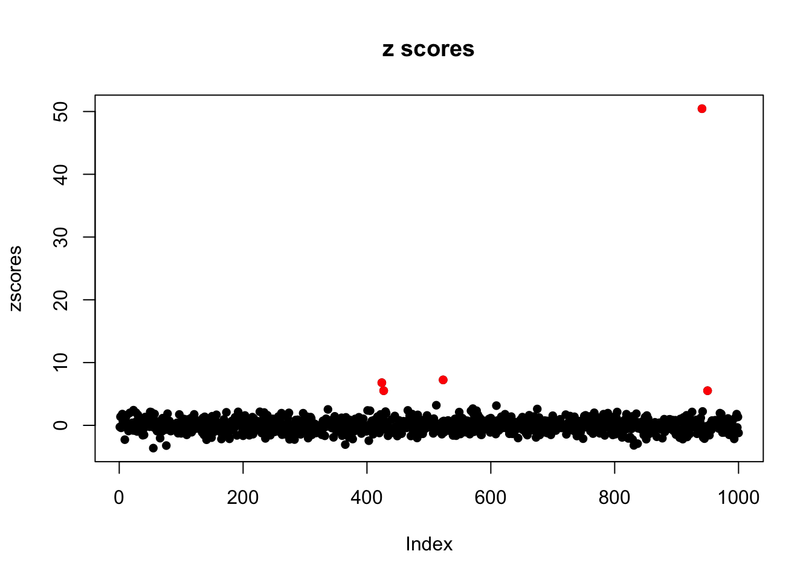
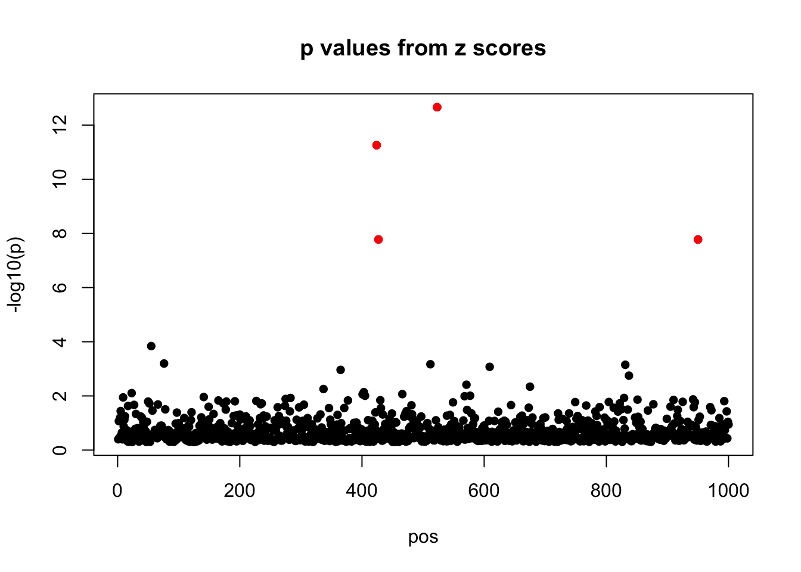
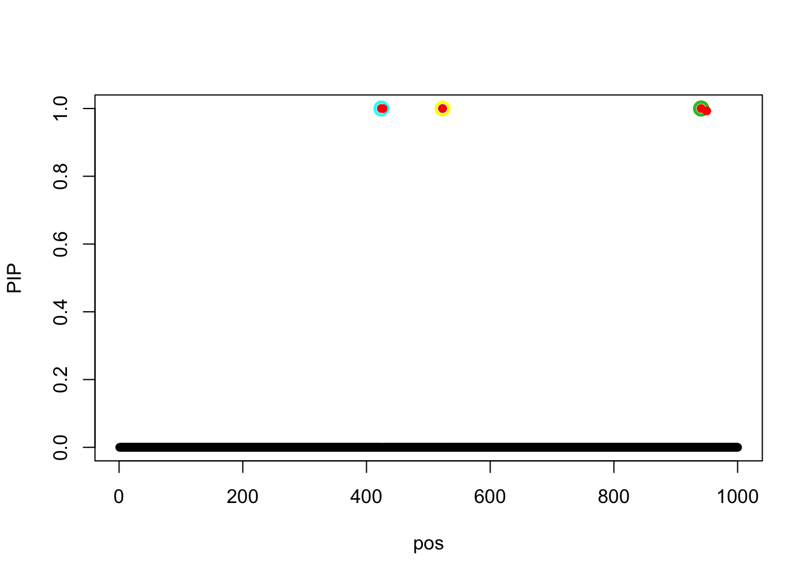
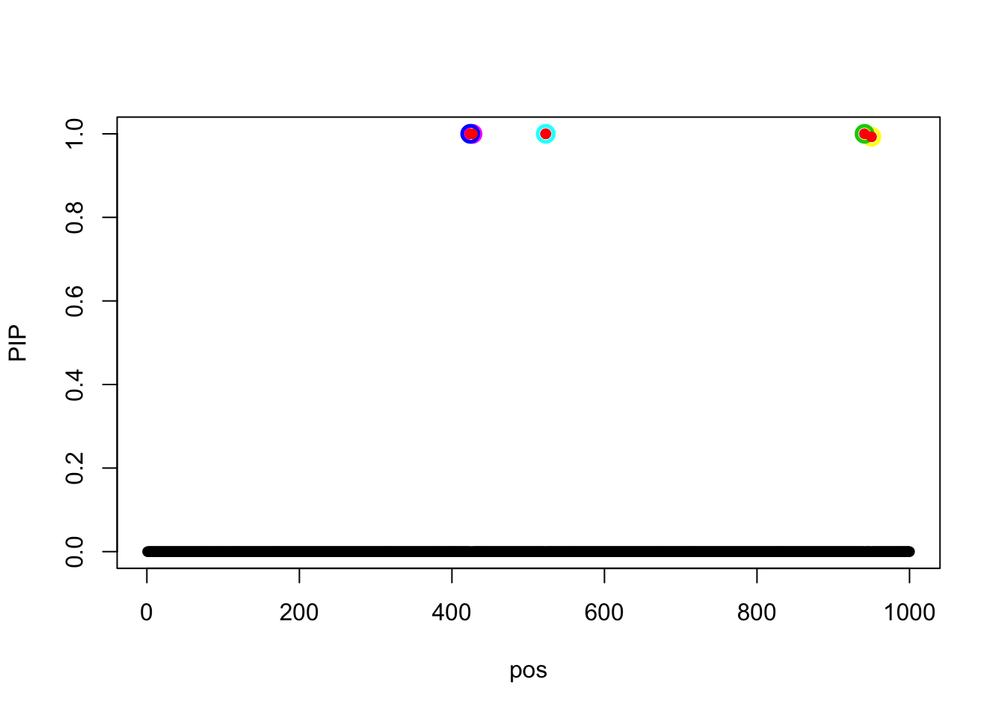

Don’t Stop Problem
Yuxin Zou
3/11/2019
Last updated: 2019-03-13
workflowr checks: (Click a bullet for more information)-
✔ R Markdown file: up-to-date
Great! Since the R Markdown file has been committed to the Git repository, you know the exact version of the code that produced these results.
-
✔ Environment: empty
Great job! The global environment was empty. Objects defined in the global environment can affect the analysis in your R Markdown file in unknown ways. For reproduciblity it’s best to always run the code in an empty environment.
-
✔ Seed:
set.seed(20190115)The command
set.seed(20190115)was run prior to running the code in the R Markdown file. Setting a seed ensures that any results that rely on randomness, e.g. subsampling or permutations, are reproducible. -
✔ Session information: recorded
Great job! Recording the operating system, R version, and package versions is critical for reproducibility.
-
Great! You are using Git for version control. Tracking code development and connecting the code version to the results is critical for reproducibility. The version displayed above was the version of the Git repository at the time these results were generated.✔ Repository version: 9b93d36
Note that you need to be careful to ensure that all relevant files for the analysis have been committed to Git prior to generating the results (you can usewflow_publishorwflow_git_commit). workflowr only checks the R Markdown file, but you know if there are other scripts or data files that it depends on. Below is the status of the Git repository when the results were generated:
Note that any generated files, e.g. HTML, png, CSS, etc., are not included in this status report because it is ok for generated content to have uncommitted changes.Ignored files: Ignored: .DS_Store Ignored: .Rhistory Ignored: .Rproj.user/ Ignored: .sos/ Ignored: data/.DS_Store Ignored: output/.DS_Store Untracked files: Untracked: data/random_data_31.rds Untracked: data/random_data_31_sim_gaussian_35.rds Untracked: data/random_data_31_sim_gaussian_35_get_sumstats_1.rds Untracked: data/small_data_46.rds Untracked: data/small_data_46_sim_gaussian_10.rds Untracked: data/small_data_46_sim_gaussian_10_get_sumstats_2.rds Untracked: docs/figure/test.Rmd/ Untracked: figure/ Untracked: output/dscoutProblem475.rds Untracked: output/dscoutProblem75.rds Untracked: output/finemap_compare_random_data_null_dscout.rds Untracked: output/finemap_compare_random_data_signal_dscout.rds Untracked: output/finemap_compare_small_data_signal_dscout.rds Untracked: output/finemap_compare_small_data_signal_dscout_RE8.rds Untracked: output/random_data_100_sim_gaussian_null_1_get_sumstats_1_finemap_1.rds Untracked: output/random_data_31_35_fit_em.rds Untracked: output/random_data_76.rds Untracked: output/random_data_76_sim_gaussian_8.rds Untracked: output/random_data_76_sim_gaussian_8_get_sumstats_1.rds Untracked: output/small_data_42_sim_gaussian_36_get_sumstats_2_susie_z_2.rds Untracked: output/small_data_92_sim_gaussian_30_get_sumstats_2_susie_z_2.rds Unstaged changes: Modified: analysis/SuSiEDAP_Power_data31_35.Rmd Modified: analysis/SusieZPerformance.Rmd Modified: analysis/SusieZPerformanceRE3.Rmd Modified: output/dsc_susie_z_v_output.rds
Expand here to see past versions:
| File | Version | Author | Date | Message |
|---|---|---|---|---|
| Rmd | 9b93d36 | zouyuxin | 2019-03-13 | wflow_publish(“analysis/DontStopProblem.Rmd”) |
| html | 1e8a043 | zouyuxin | 2019-03-13 | Build site. |
| Rmd | a761600 | zouyuxin | 2019-03-13 | wflow_publish(“analysis/DontStopProblem.Rmd”) |
| html | e0b9bd7 | zouyuxin | 2019-03-13 | Build site. |
| Rmd | 3a9cc9b | zouyuxin | 2019-03-13 | wflow_publish(“analysis/DontStopProblem.Rmd”) |
| html | a0fba92 | zouyuxin | 2019-03-12 | Build site. |
| Rmd | 8437998 | zouyuxin | 2019-03-12 | wflow_publish(“analysis/DontStopProblem.Rmd”) |
library(susieR)
library(knitr)
library(kableExtra)
R.utils::sourceDirectory("~/Documents/GitHub/susieR/inst/code/susiez_num/")Data: SuSiE vs DAP: data 31_35 (lower power)
X = readRDS('data/random_data_31.rds')$X
R = cor(X)
data = readRDS('data/random_data_31_sim_gaussian_35.rds')
y = data$Y
beta = data$meta$true_coef
sumstats = readRDS('data/random_data_31_sim_gaussian_35_get_sumstats_1.rds')
zscores = sumstats$sumstats$bhat/sumstats$sumstats$shatWe randomly generated 1200 by 1000 matrix X, each entry is random from N(0,1). The variables are independent. There are 5 signals in the simulated data, total PVE is 0.8. The true signals are 424, 427, 523, 941, 950.
plot(zscores, pch=16, main='z scores')
pos = 1:length(zscores)
points(pos[beta!=0],zscores[beta!=0],col=2,pch=16)
Expand here to see past versions of unnamed-chunk-2-1.png:
| Version | Author | Date |
|---|---|---|
| a0fba92 | zouyuxin | 2019-03-12 |
susie_plot(zscores, y = "z", b = beta, main='p values from z scores')
Expand here to see past versions of unnamed-chunk-2-2.png:
| Version | Author | Date |
|---|---|---|
| a0fba92 | zouyuxin | 2019-03-12 |
fit_1 = susie_z_general_num(zscores, R, lambda = 1e-6, track_fit = TRUE, verbose = TRUE, max_iter = 100, estimate_prior_method = 'EM')fit_1 = readRDS('output/random_data_31_35_fit_em.rds')The algorithm fails to stop.
The objective is -1790.4412135.
susie_plot(fit_1, y='PIP', b=beta)
Expand here to see past versions of unnamed-chunk-4-1.png:
| Version | Author | Date |
|---|---|---|
| e0b9bd7 | zouyuxin | 2019-03-13 |
The estimated prior variance at last 10 iterations are
Vs = matrix(NA, 11, 10)
for(i in 1:10){
Vs[i,] = fit_1$trace[[90+i]]$V
}
Vs[11,] = fit_1$V
row.names(Vs) = paste0('Iter: ', 91:101)
Vs %>% kable() %>% kable_styling()| Iter: 91 | 1293.436 | 0 | 42.28013 | 202.6049 | 37.97431 | 0 | 31.53091 | 24.34895 | 0 | 0 |
| Iter: 92 | 1296.446 | 0 | 42.28012 | 201.4125 | 37.97438 | 0 | 31.53092 | 24.34897 | 0 | 0 |
| Iter: 93 | 1299.477 | 0 | 42.28012 | 200.2171 | 37.97446 | 0 | 31.53093 | 24.34898 | 0 | 0 |
| Iter: 94 | 1302.529 | 0 | 42.28012 | 199.0185 | 37.97454 | 0 | 31.53094 | 24.34900 | 0 | 0 |
| Iter: 95 | 1305.601 | 0 | 42.28012 | 197.8168 | 37.97462 | 0 | 31.53095 | 24.34902 | 0 | 0 |
| Iter: 96 | 1308.694 | 0 | 42.28012 | 196.6119 | 37.97470 | 0 | 31.53096 | 24.34904 | 0 | 0 |
| Iter: 97 | 1311.809 | 0 | 42.28012 | 195.4039 | 37.97478 | 0 | 31.53097 | 24.34906 | 0 | 0 |
| Iter: 98 | 1314.945 | 0 | 42.28012 | 194.1927 | 37.97486 | 0 | 31.53098 | 24.34907 | 0 | 0 |
| Iter: 99 | 1318.103 | 0 | 42.28012 | 192.9784 | 37.97494 | 0 | 31.53099 | 24.34909 | 0 | 0 |
| Iter: 100 | 1321.282 | 0 | 42.28012 | 191.7608 | 37.97503 | 0 | 31.53100 | 24.34911 | 0 | 0 |
| Iter: 101 | 1324.485 | 0 | 42.28012 | 190.5401 | 37.97511 | 0 | 31.53101 | 24.34913 | 0 | 0 |
Fit model with initial prior variance 50:
fit_2 = susie_z_general_num(zscores, R, lambda = 1e-6, track_fit = TRUE, verbose = TRUE, scaled_prior_variance = 50, estimate_prior_method = 'EM')[1] "before estimate sigma2 objective:-1816.93777951728"
[1] "after estimate sigma2 objective:-1816.93777951728"
[1] "before estimate sigma2 objective:-1780.84227231863"
[1] "after estimate sigma2 objective:-1780.84227231863"
[1] "before estimate sigma2 objective:-1780.72942172036"
[1] "after estimate sigma2 objective:-1780.72942172036"
[1] "before estimate sigma2 objective:-1780.72794633462"
[1] "after estimate sigma2 objective:-1780.72794633462"
[1] "before estimate sigma2 objective:-1780.72793597231"
[1] "after estimate sigma2 objective:-1780.72793597231"The algorithm stops. The objective is -1780.727936.
susie_plot(fit_2, y='PIP', b=beta)Expand here to see past versions of unnamed-chunk-6-1.png:
| Version | Author | Date |
|---|---|---|
| e0b9bd7 | zouyuxin | 2019-03-13 |
The estimated prior variances are
matrix(fit_2$V, 1, 10) %>% kable() %>% kable_styling()| 2520.965 | 42.28076 | 37.95474 | 31.52849 | 24.34387 | 0 | 0 | 0 | 0 | 0 |
Fit model with initialization at previous one:
fit_3 = susie_z_general_num(zscores, R, lambda = 1e-6, track_fit = TRUE, verbose = TRUE, s_init = fit_2, scaled_prior_variance = fit_2$V)[1] "before estimate sigma2 objective:-1780.7279359051"
[1] "after estimate sigma2 objective:-1780.7279359051"
[1] "before estimate sigma2 objective:-1780.72793590511"
[1] "after estimate sigma2 objective:-1780.72793590511"susie_plot(fit_3, y='PIP', b=beta)
Expand here to see past versions of unnamed-chunk-8-1.png:
| Version | Author | Date |
|---|---|---|
| e0b9bd7 | zouyuxin | 2019-03-13 |
| a0fba92 | zouyuxin | 2019-03-12 |
Fit model using ‘optim’:
fit_4 = susie_z_general_num(zscores, R, lambda = 1e-6, track_fit = TRUE, verbose = TRUE, estimate_prior_method = 'optim')[1] "before estimate sigma2 objective:-1786.68857739904"
[1] "after estimate sigma2 objective:-1786.68857739904"
[1] "before estimate sigma2 objective:-1781.50283517316"
[1] "after estimate sigma2 objective:-1781.50283517316"
[1] "before estimate sigma2 objective:-1780.72803928019"
[1] "after estimate sigma2 objective:-1780.72803928019"
[1] "before estimate sigma2 objective:-1780.72793598391"
[1] "after estimate sigma2 objective:-1780.72793598391"The objective is -1780.727936.
susie_plot(fit_4, y='PIP', b=beta)
Expand here to see past versions of unnamed-chunk-10-1.png:
| Version | Author | Date |
|---|---|---|
| e0b9bd7 | zouyuxin | 2019-03-13 |
| a0fba92 | zouyuxin | 2019-03-12 |
The estimated prior variances are
matrix(fit_4$V, 1, 10) %>% kable() %>% kable_styling()| 2520.999 | 42.27946 | 37.9566 | 31.52854 | 24.34473 | 0 | 0 | 0 | 0 | 0 |
Session information
sessionInfo()R version 3.5.1 (2018-07-02)
Platform: x86_64-apple-darwin15.6.0 (64-bit)
Running under: macOS 10.14.3
Matrix products: default
BLAS: /Library/Frameworks/R.framework/Versions/3.5/Resources/lib/libRblas.0.dylib
LAPACK: /Library/Frameworks/R.framework/Versions/3.5/Resources/lib/libRlapack.dylib
locale:
[1] en_US.UTF-8/en_US.UTF-8/en_US.UTF-8/C/en_US.UTF-8/en_US.UTF-8
attached base packages:
[1] stats graphics grDevices utils datasets methods base
other attached packages:
[1] kableExtra_1.0.1 knitr_1.20 susieR_0.7.1.0482
loaded via a namespace (and not attached):
[1] Rcpp_1.0.0 highr_0.7 compiler_3.5.1
[4] pillar_1.3.1 git2r_0.24.0 workflowr_1.1.1
[7] R.methodsS3_1.7.1 R.utils_2.7.0 tools_3.5.1
[10] digest_0.6.18 evaluate_0.12 tibble_2.0.1
[13] lattice_0.20-38 viridisLite_0.3.0 pkgconfig_2.0.2
[16] rlang_0.3.1 Matrix_1.2-15 rstudioapi_0.9.0
[19] yaml_2.2.0 stringr_1.3.1 httr_1.4.0
[22] xml2_1.2.0 hms_0.4.2 webshot_0.5.1
[25] rprojroot_1.3-2 grid_3.5.1 glue_1.3.0
[28] R6_2.3.0 rmarkdown_1.11 readr_1.3.1
[31] magrittr_1.5 whisker_0.3-2 backports_1.1.3
[34] scales_1.0.0 htmltools_0.3.6 rvest_0.3.2
[37] colorspace_1.4-0 stringi_1.2.4 munsell_0.5.0
[40] crayon_1.3.4 R.oo_1.22.0 This reproducible R Markdown analysis was created with workflowr 1.1.1